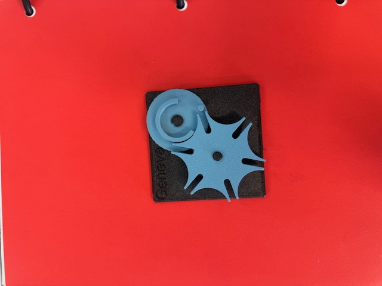
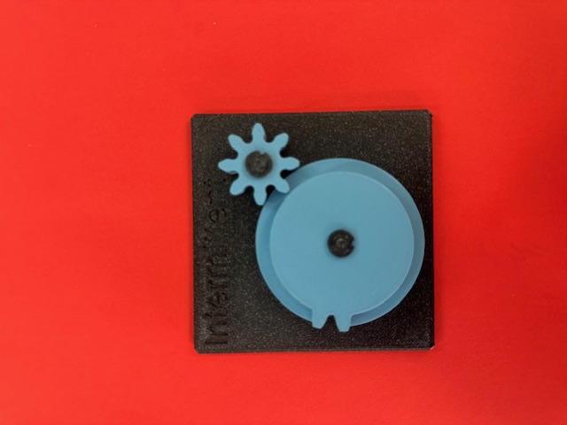
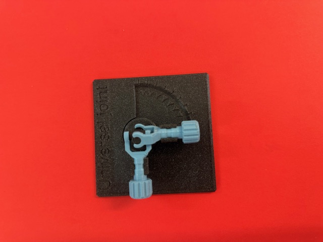
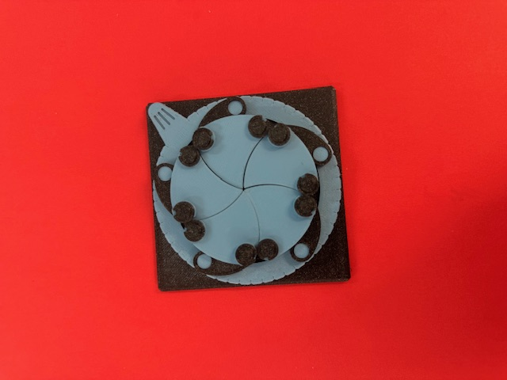
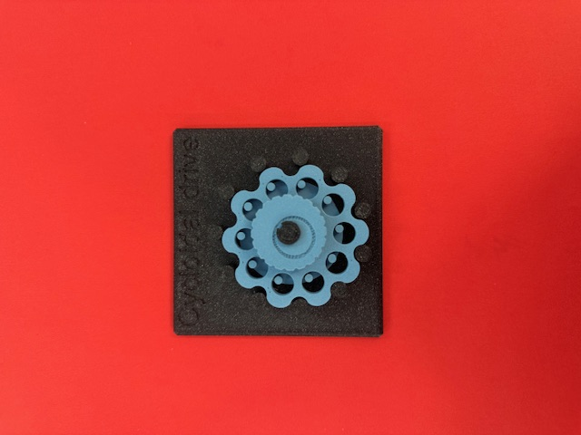
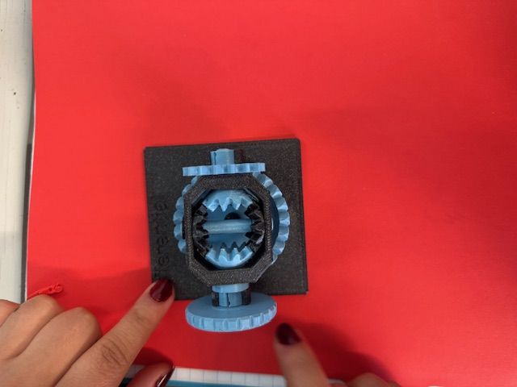
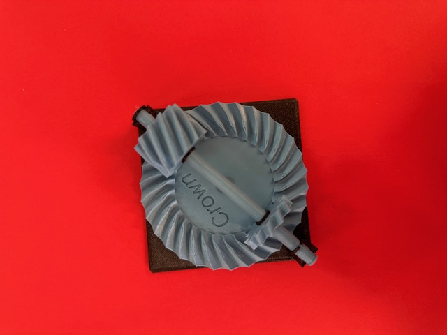
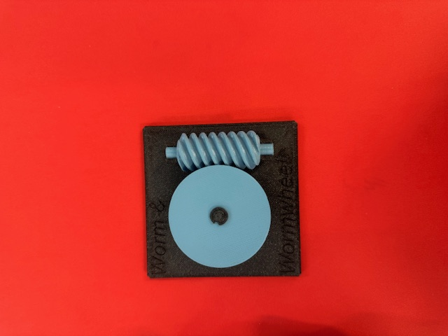
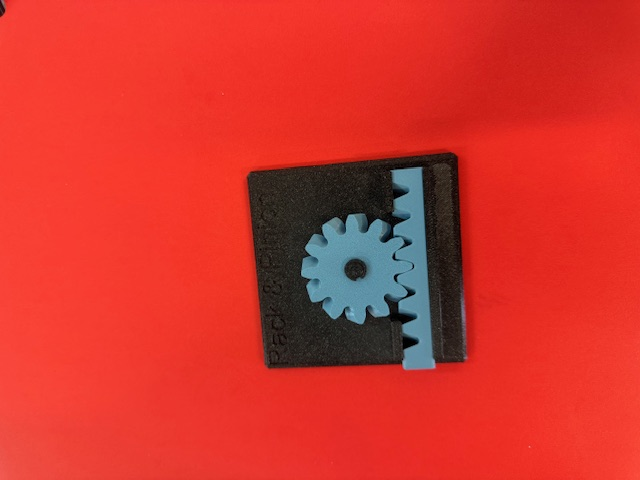
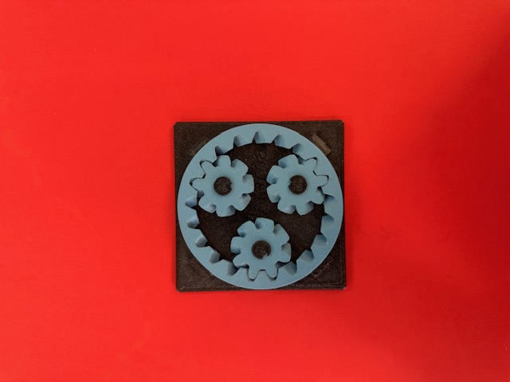

Ficha de Estación - Mecanismos Aplicados
Asignatura: Introducción a la Mecatrónica
Proyecto: Mecanismos
Tabla de Evaluación de Estaciones
| Estación / Mecanismo | ¿Qué transforma? (vel \(\leftrightarrow\) par, rot \(\leftrightarrow\) trasl, cont \(\leftrightarrow\) inter, cambio de eje) |
Relación estimada (cuenta dientes o vueltas) |
¿Reversible o autobloqueante? | ¿Dónde lo has visto en la vida real? (Ejemplos cotidianos) | ¿Dónde serviría en el carro de fútbol (\(20 \times 20\text{ cm}\))? |
|---|---|---|---|---|---|
| 1. Diferencial (Differential) | Cambio de eje (\(90^\circ\)) + Reparto de Par: Distribuye el giro del motor a dos ejes independientes ajustando la velocidad de cada uno según la resistencia. | \(1:1\) (piñón impulsor a caja diferencial); variación dinámica en las salidas. | Reversible: Si giras las ruedas con la mano, el eje de entrada gira. | Autos familiares / Camionetas: Permite que la rueda externa gire más rápido que la interna al dar una vuelta en una esquina. | No se usa físicamente: El carro usa dirección diferencial por software (2 motores amarillos independientes). Serviría si usáramos 1 solo motor principal. |
| 2. Cicloidal (Cycloidal drive) | Vel \(\leftrightarrow\) Par: Reduce drásticamente la velocidad para multiplicar la fuerza de giro (torque) en un tamaño muy compacto. | \(10\text{ pernos / lóbulos}\). Relación aproximada \(10:1\) (\(1\text{ paso}\) por vuelta completa). | Autobloqueante / Difícil de revertir: Debido al roce y contacto constante de los lóbulos. | Desarmador eléctrico inalámbrico / Taladros pequeños: Para entregar mucha fuerza para atornillar en un espacio reducido. | Mecanismo pateador: Para acumular suficiente fuerza con un motor pequeño y golpear la pelota de ping-pong hacia la portería. |
| 3. Cardán (Universal joint) | Transmisión angular: Transmite rotación continua entre dos ejes que están desalineados o formando un ángulo. | \(1:1\) (Gira a la misma velocidad en entrada y salida). | Reversible: Al girar un eje, el otro responde inmediatamente. | Extensión flexible de desarmador / Barra de camioneta: Para apretar tornillos en esquinas o enviar fuerza a las ruedas traseras. | Ejes inclinados: Para conectar los motores a las ruedas si el carro tuviera suspensión o las ruedas estuvieran inclinadas. |
| 4. Obturador de láminas (Aperture / Iris) | Rotación \(\rightarrow\) Cierre coordinado: La rotación de una palanca/anillo abre o cierra varias láminas concéntricamente. | \(5\text{ láminas}\) sincronizadas por \(1\text{ palanca/anillo}\). | Reversible: Se abre y cierra manualmente sin trabarse. | Cámara del celular / Rejilla de aire: Regula la entrada de luz en la cámara o el paso de aire en una ventilación. | Atrapador de pelota: Instalado en el frente para cerrar las láminas levemente sobre la pelota de ping-pong y asegurarla antes de tirar. |
| 5. Cruz de Génova (Geneva drive) | Cont \(\rightarrow\) Inter: Transforma giro continuo en impulsos paso a paso deteniéndose entre cada ciclo. | \(6\text{ ranuras}\). \(1\text{ vuelta}\) del disco mueve la cruz \(\frac{1}{6}\) de vuelta (\(60^\circ\)). Relación \(6:1\). | Autobloqueante: Entre giros la rueda queda fija y trancada mecánicamente. | Reloj de pared / Dispensador de dulces: Para mover las manecillas a pasos o soltar una pastilla/dulce a la vez. | Dispensador de pelotas: Para alimentar pelotas de ping-pong de una en una al sistema de disparo. |
| 6. Corona (Crown gear) | Cambio de eje (\(90^\circ\)) + Vel \(\leftrightarrow\) Par: Cambia la dirección del giro a \(90^\circ\) usando un engrane plano. | \(\approx 28\text{ dientes}\) en la corona y \(14\) en el piñón. Relación \(2:1\). | Reversible: Puedes girar el mecanismo desde la corona o desde el piñón. | Batidora manual de cocina / Taladro de mano: El mango gira de forma horizontal y mueve los batidores verticales. | Aprovechamiento de espacio: Para acostar los motores amarillos dentro del chasis de \(20 \times 20\text{ cm}\) y transmitir el giro a las ruedas. |
Análisis Técnico Aplicado al Proyecto
1. Dimensiones y Restricciones del Carro
- Chasis: \(20 \times 20\text{ cm}\).
- Actuadores: \(2\) Motores reductores amarillos (relación interna \(1:48\)).
- Controlador de Potencia: Puente H (L298N / TB6612FNG) controlado por Bluetooth.
- Objetivo Dinámico: Manipular y anotar una pelota de ping-pong (diámetro \(\approx 40\text{ mm}\), masa \(\approx 2.7\text{ g}\)).
2. Dirección Diferencial por Software
En lugar de utilizar un mecanismo físico de Diferencial (Mecanismo 1), el proyecto implementa dirección diferencial electrónica.
* Avance en línea recta:
$\(v_{\text{der}} = v_{\text{izq}} \implies \omega = 0\)$
* Giro sobre su propio eje (rotación dentro del espacio de \(20 \times 20\text{ cm}\)):
$\(v_{\text{der}} = -v_{\text{izq}} \implies v_{\text{centro}} = 0, \quad \omega = \frac{2 \cdot v_{\text{der}}}{L}\)$
Donde \(L\) es la distancia entre ruedas (\(L \approx 0.16\text{ m}\)).
3. Integración de Mecanismos en el Proyecto
- Reductor Cicloidal (Mecanismo 2): Permite obtener gran par en un tamaño compacto para accionar el percutor o pateador de la pelota.
- Obturador de Láminas (Mecanismo 4): Ubicado en la bahía frontal para sujetar la pelota de ping-pong mientras el carro maniobra en la cancha.
- Engranaje Corona (Mecanismo 6): Ayuda a reorientar la transmisión de potencia a \(90^\circ\) optimizando la distribución de componentes en el chasis de \(20 \times 20\text{ cm}\).
Anexo: Galería de Mecanismos Mecánicos
En esta sección se presentan los modelos físicos impresos en 3D correspondientes a los distintos mecanismos analizados en este reporte.
Nota para VS Code: Asegúrate de guardar las imágenes dentro de una carpeta llamada
assetsoimagesen la misma raíz que este archivo.md.
1. Rueda de Ginebra (Geneva Drive)

- Tipo de mecanismo: Mecanismo de movimiento intermitente.
- Descripción: Transforma un movimiento de rotación continuo en un movimiento de rotación intermitente. Es utilizado frecuentemente en proyectores de cine, contadores mecánicos y maquinaria de envasado.
2. Engranaje Intermitente (Intermittent Gear)

- Tipo de mecanismo: Transmisión discontinua.
- Descripción: Diseñado con sectores lisos sin dientes para detener temporalmente la rotación del engranaje conducido durante la marcha constante del engranaje conductor.
3. Piñón y Cremallera (Rack & Pinion)

- Tipo de mecanismo: Transformación de movimiento rotativo a lineal.
- Descripción: Transforma un movimiento de rotación en un movimiento de traslación lineal (o viceversa) mediante el acoplamiento de una rueda dentada circular (piñón) sobre una barra dentada recta (cremallera). Ampliamente utilizado en sistemas de dirección automotriz y ferrocarriles de cremallera.
4. Junta Cardán (Universal Joint)

- Tipo de mecanismo: Acoplamiento flexible de ejes.
- Descripción: Permite la transmisión de par y movimiento de rotación entre dos ejes que no están alineados y cuyo ángulo de trabajo puede variar.
5. Diafragma Iris (Iris Mechanism)

- Tipo de mecanismo: Obturador regulable de apertura.
- Descripción: Conjunto de mallas u hojas superpuestas que ajustan circularmente el tamaño de una apertura central, utilizado principalmente en sistemas ópticos y cámaras.
6. Reductor Cicloidal (Cycloidal Drive)

- Tipo de mecanismo: Reductor de velocidad de alta precisión.
- Descripción: Mecanismo reductor de gran relación de transmisión basado en el perfil de dientes cicloidales. Ofrece alta rigidez, baja holgura (backlash) y alta capacidad de carga.
7. Diferencial (Differential Gear)

- Tipo de mecanismo: Tren cónico de transmisión.
- Descripción: Permite que las ruedas o ejes de salida giren a diferentes velocidades angulares mientras se mantiene la transmisión de par desde una fuente común.
8. Engranaje Corona (Crown Gear)

- Tipo de mecanismo: Engranaje de ejes perpendiculares.
- Descripción: Engranaje cuya dentadura se proyecta perpendicularmente a la cara de la rueda, permitiendo cambiar la dirección del eje de rotación \(90^\circ\).
9. Tornillo Sin Fin y Corona (Worm & Wormwheel)

- Tipo de mecanismo: Transmisión por tornillo sin fin.
- Descripción: Ofrece una alta relación de reducción en un espacio compacto y, en la mayoría de los casos, cuenta con la propiedad de autobloqueo (no reversible desde la corona hacia el tornillo).
10. Engranaje Cónico (Bevel Gear)

- Tipo de mecanismo: Transmisión cónica angular.
- Descripción: Empleado para transmitir potencia entre ejes que se intersectan, comúnmente a \(90^\circ\), mediante dientes cónicos o helicoidales.
11. Engranaje Planetario (Planetary Gear)

- Tipo de mecanismo: Tren de engranajes epicicloidal.
- Descripción: Compuesto por un engranaje solar central, satélites (planetas) y una corona exterior. Proporciona altas relaciones de reducción en un espacio concéntrico y compacto.
Video de su funcionamiento:
Resolució́n de Ejercicios de Mecá́nica y Reducciones
Ejercicio 1: Tren simple
Un piñón de \(10\) dientes mueve un engrane de \(40\) dientes. El motor entrega \(300\text{ rpm}\) y \(0.1\text{ N}\cdot\text{m}\). ¿A qué velocidad y con qué par gira la salida? (Ignorar pérdidas por fricción).
Datos:
-
Número de dientes del piñón (entrada): \(Z_1 = 10\)
-
Número de dientes del engrane (salida): \(Z_2 = 40\)
-
Velocidad de entrada: \(n_1 = 300\text{ rpm}\)
-
Torque/Par de entrada: \(T_1 = 0.1\text{ N}\cdot\text{m}\)
Procedimiento:
- Relación de transmisión (\(i\)):
(La relación es \(1:4\) o de valor \(i = 4\))
- Velocidad de salida (\(n_2\)):
- Par / Torque de salida (\(T_2\)): Asumiendo conservación de potencia sin pérdidas (\(P = T \cdot \omega\)):
Resultado:
-
Velocidad de salida: \(75\text{ rpm}\)
-
Par de salida: \(0.4\text{ N}\cdot\text{m}\)
Ejercicio 2: Tren compuesto
Dos etapas en serie: \(12 \to 36\) dientes, seguida de \(10 \to 40\) dientes. ¿Cuál es la relación total? Si la entrada gira a \(960\text{ rpm}\), ¿a qué velocidad gira la salida final?
Datos:
-
Etapa 1: \(Z_1 = 12 \to Z_2 = 36\)
-
Etapa 2: \(Z_3 = 10 \to Z_4 = 40\)
-
Velocidad de entrada: \(n_{\text{entrada}} = 960\text{ rpm}\)
Procedimiento:
- Relación de la primera etapa (\(i_1\)):
- Relación de la segunda etapa (\(i_2\)):
- Relación de transmisión total (\(i_{\text{total}}\)):
- Velocidad de salida final (\(n_{\text{salida}}\)):
Resultado:
-
Relación total: \(12\) (o \(1:12\))
-
Velocidad de salida final: \(80\text{ rpm}\)
Ejercicio 3: Sinfín
Un sinfín de \(2\) hilos mueve una corona de \(40\) dientes. (En un sinfín, \(Z_1\) es el número de hilos). ¿Cuál es la relación de transmisión? ¿Cuántas vueltas del sinfín se necesitan para una vuelta de la corona?
Datos:
-
Número de hilos del sinfín: \(Z_1 = 2\)
-
Número de dientes de la corona: \(Z_2 = 40\)
Procedimiento:
- Relación de transmisión (\(i\)):
- Vueltas del sinfín por vuelta de la corona: Por definición, la relación de transmisión \(i = 20\) indica que la entrada (sinfín) debe girar \(20\) veces para que la salida (corona) gire \(1\) vez.
Resultado:
-
Relación de transmisión: \(20\) (o \(1:20\))
-
Vueltas del sinfín: \(20\) vueltas por cada \(1\) vuelta de la corona.
Ejercicio 4: Cruz de Ginebra
Contar las ranuras de la cruz del laboratorio y calcular: grados que avanza por cada paso, y vueltas completas del impulsor necesarias para una vuelta completa de la cruz.
Nota pedagógica / Supuesto estándar: Dado que la cantidad exacta de ranuras depende de la pieza física de laboratorio, tomamos como referencia el modelo más común en laboratorios de ingeniería: una cruz de \(N = 4\) ranuras.
(Si tu pieza de laboratorio usa un número diferente, por ejemplo \(N = 6\), sustituye el valor de \(N\) en las fórmulas).
Datos (Asumiendo \(N = 4\) ranuras):
- Número de ranuras: \(N = 4\)
Procedimiento:
- Grados que avanza por cada paso (\(\theta\)):
- Vueltas del impulsor para \(1\) vuelta completa de la cruz: Cada vuelta completa (\(360^\circ\)) del impulsor mueve la cruz un paso (una ranura). Para completar \(1\) vuelta completa (\(360^\circ\)) de la cruz:
Resultado (Para \(N = 4\)):
-
Avance por paso: \(90^\circ\)
-
Vueltas del impulsor: \(4\) vueltas del impulsor por cada \(1\) vuelta de la cruz.
(Para \(N = 6\): avanza \(60^\circ\) por paso y requiere \(6\) vueltas del impulsor).
Ejercicio 5: Velocidad del carro
El motor TT tiene reducción interna \(1:48\) y, a \(6\text{ V}\), la rueda gira aproximadamente \(200\text{ rpm}\) sin carga. Con ruedas de \(65\text{ mm}\) de diámetro, usando:
¿cuál es la velocidad máxima teórica del carro en \(\text{m/s}\)? ¿Por qué en el piso real será menor que ese valor teórico?
Datos:
-
Velocidad angular de la rueda: \(rpm = 200\text{ rpm}\)
-
Diámetro de la rueda: \(D = 65\text{ mm} = 0.065\text{ m}\)
Procedimiento:
- Cálculo de la velocidad máxima teórica (\(v\)):
-
Justificación física de la diferencia en el piso real: En condiciones reales, la velocidad será menor debido a:
-
Fricción y rozamiento: Fricción mecánica en los ejes, reductora y la resistencia al rodamiento entre la rueda y la superficie.
-
Carga/Peso: El motor ya no funciona "sin carga"; el peso del vehículo opone resistencia y reduce la velocidad angular real del motor.
-
Deslizamiento: Pérdida de tracción o patinaje de las ruedas en el piso.
-
Caída de voltaje/eficiencia: Resistencia interna de la batería o componentes electrónicos bajo carga.
Resultado:
- Velocidad máxima teórica: \(\approx 0.681\text{ m/s}\) (o \(68.1\text{ cm/s}\))
Ejercicio 6: Dirección diferencial
La rueda izquierda va a \(0.4\text{ m/s}\), la derecha a \(0.6\text{ m/s}\), y la separación entre ruedas es \(L = 0.12\text{ m}\). Usando:
Calcular la velocidad del centro del carro, su velocidad de giro, y el radio de la curva que describe.
Datos:
-
\(v_{izq} = 0.4\text{ m/s}\)
-
\(v_{der} = 0.6\text{ m/s}\)
-
\(L = 0.12\text{ m}\)
Procedimiento:
- Velocidad del centro del carro (\(v\)):
- Velocidad angular/de giro (\(\omega\)):
- Radio de curvatura (\(R\)):
Resultado:
-
Velocidad del centro: \(0.5\text{ m/s}\)
-
Velocidad de giro (\(\omega\)): \(1.67\text{ rad/s}\)
-
Radio de la curva (\(R\)): \(0.3\text{ m}\) (o \(30\text{ cm}\))
Ejercicio 7: Diseño
Se busca que el carro sea el doble de "fuerte" para empujar la pelota en el torneo, aceptando ir a la mitad de velocidad. Proponer una relación de engranes adicional entre motor y rueda, y calcular la nueva velocidad máxima resultante.
Datos iniciales:
-
Condición deseada: Torque final \(= 2 \times T_{\text{inicial}}\)
-
Velocidad inicial (\(v_{\text{inicial}}\)): \(0.681\text{ m/s}\) (del Ejercicio 5)
Procedimiento:
-
Propuesta de relación de engranes adicional: Para duplicar la fuerza (torque) y reducir la velocidad a la mitad, se requiere agregar una etapa reductora externa con una relación \(2:1\) (es decir, \(i_{\text{adicional}} = 2\)).
-
Propuesta de engranes:
-
Engrane tractor (piñón acoplado al eje actual): \(Z_A = 12\) dientes.
-
Engrane conducido (acoplado a la rueda): \(Z_B = 24\) dientes.
-
Relación: \(i_{\text{adicional}} = \frac{Z_B}{Z_A} = \frac{24}{12} = 2\).
-
-
Cálculo de la nueva velocidad máxima (\(v_{\text{nueva}}\)):
Resultado:
-
Relación de engranes adicional: \(2:1\) (por ejemplo, piñón de \(12\) dientes a rueda de \(24\) dientes).
-
Nueva velocidad máxima: \(\approx 0.341\text{ m/s}\) (o \(34.1\text{ cm/s}\)).